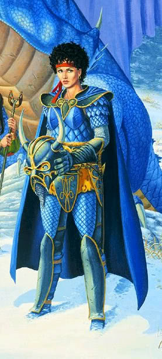

Villains
This section is dedicated to the main villains who helped assist Takhisis in her attempt on conquering Krynn. Beware some spoilers ahead.
Verminaard
Verminaard joined the the Dragon Armies and soon took over the Red Dragon Army from Phair Caron after the failed campaign in Silvanesti. Verminaard became one of Takhisis's first clerics and carried the magical mace Nightbringer. After taking over the Red Dragon Army, Verminaard was overseeing the mines at Pax Tharkas when the companions infiltrated, freed the slaves, and slew Verminaard.
Kitiara Uth Matar
Kitiara Uth Matar is the half sister to both Raistlin and Caramon Majere. Known as the Blue Lady she was the leader of the Blue Dragon Army. Once lover to Tanis and friend to the companions she could not return to the Inn of the Last Home in Dragons of Autumn Twilight. Kitiara is the only known person to be able to enlist the help of Lord Soth by spending a night in his keep. Kitiara is also one of the few people to gain true loyalty from a dragon ( her mount Skie).
Ariakas
The chosen champion of Takhisis and commander of the Dragon Armies. Carried the unholy dark sword Great Sword of Drakmattha. Was key in the formation and refinement of the Draconian race. Formed the Dragon Armies and sent them to invade in 348 AC. In the Temple of Darkness in Neraka, Ariakas was cut down by Tanis Half-Elven with the assistance of Kitiara and Raistlin in front of the other Dragon Highlords.
Lord Soth
Known as the Knight of the Black Rose. Lord Soth was once a Knight of Solamnia. Fallen into to disgrace and exiled by the Order for the murder of his first wife , Lord Soth fell into a deep depression. His new wife prayed to the goddess Mishakal and was told to send Soth to the Kingpriest of Istar to prevent the Cataclysm. If Soth died in the attempt he would be resurrected to complete his quest and die with full honor. Being tricked by being told of his wife being unfaithful he abandons his quest to return home. In the middle of the argument with his wife the Cataclysm happens and his keep is struck. Abandoning his wife and child to the flames his wife curses him to live one life for every life lost in the Cataclysm. Upon his death and revival he becomes Death Knight.